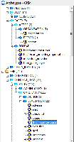
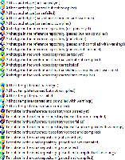
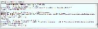
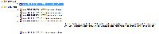
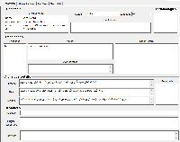
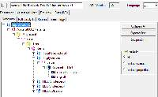
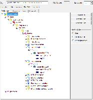
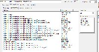
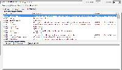

The explorer
As soon as you have specified a profile (Repository > Set repository), the left-side explorer controls will populate and you will initially see the explorer with the reference model (RM) class hierarchy. If you have selected 'Show entire ontology in explorer?' in the Options dialog, you will see all classes from all loaded RM schemas. This can be useful for understanding the reference models. In normal use, you will probably not use this option. At any time, you can select a class node in the explorer, and if you have the node map selected in the archetype view area, you will see the RM definition of the selected class, either in differential form (just attributes introduced by that class), or in flat form, i.e. compressed through inheritance. These various views are shown below.

Initial view |

Expanded view |

Specialisation view |

After hitting F7 |
{kind=link}
Compiling archetypes
When you start the ADL Workbench, archetypes are not compiled. The easiest way to compile them is to hit F7, which will compile all of the archetypes in the currently selected repository in one go. This can be interrupted with Shift-ESC. 'Compiling' means parsing, validating and flattening. Archetypes can also be compiled individually by selecting them in the explorer. Other options under the repository menu allow you to compile archetypes in selected subtrees. Note that if you select a specialised archetype, its specialisation parents will automatically compile.
If your repository has templates in it, you can compile a template in the same ways. If you select a template (lower explorer), you will see that all its dependencies compile, i.e. all archetypes implicated in its slot-filling and specialisation statements.
If your repository contains legacy '.adl' archetypes, they will initially generate differential (.adls) source form archetypes, containing the 'generated' marker at the top. In this case, when you hit F7 or compile by another means, you will see the '(f)' marker in the archetype explorer, indicating those archetypes whose primary form is a legacy .adl file. If you subsequently change either the .adl file or the .adls file with an editor, the AWB will recompile from whichever one was changed. The archetype icons in the explorer change according to their current compilation status, as shown below.
{kind=link}
The compilation process performs validation on every archetype and reports errors. Errors fall into two categories: syntactic, denoted with codes starting with 'S', and validity errors, denoted with 'V' codes. The errors are shown both in the status tab and the errors tab at the bottom. The status window is shown below.

Compilation feedback |

Compilation errors |
{kind=link}
The compilation errors can also be seen in the Errors tab at the bottom, classified according to type, as shown below.
{kind=link}
Viewing an archetype
This section describes the various ways of viewing a successfully compiled archetype.
Descriptive meta-data
All archetypes have a number of header sections containing descriptive meta-data about the archetype. The Description tab shows all of these sections, including author details, translation information, keywords, purpose, use, misuse and so on.

Description sections |

Unicode description |
{kind=link}
Source (differential) and flat forms
A key point to understand is that in most views, the archetype is visible in either source (differential) or flat form. For non-specialised archetypes, the two forms are structurally the same. For specialised archetypes and templates, the source form is the same idea as for object-oriented class files (e.g. in Java, .NET, etc), i.e. it contains only differences with respect to the immediate specialisation parent. For both, the source form is the 'authored' form. The flat form is the result of 'compressing' an archetype through its specialisation lineage, i.e. the 'operational' form of the archetype at runtime. This 'flattening' is the same thing that happens in all object-oriented programming technologies. Due to flattening, we often speak of the 'flat parent' with respect to a differential archetype, which denotes all constraints so far in the lineage.
From the point of view of the AWB, you can see both the differential and flat forms of an archetype visualised. Most of the views below can be seen in differential and flat form. Use the Differential and Flat View tabs at the top to switch.
Node map
The node map is a way of viewing the definition part of the archetype structurally. The definition section contains the main definitional statements of the archetype, and can be thought of as a visualisation of an AOM structure, that is to say, each node corresponds to an AOM node type. In the differential form, the node map shows only those constraints introduced by the archetype on its own. If it is a non-specialised archetype, these constraints are in addition to constraints implied by the reference model (cardinality, types etc). For a specialised archetype, the constraints are in addition to the 'flat parent', i.e. the notional sum of constraints so far in the specialisation lineage. You will notice in particular that specialised archetypes have constraints whose parent attributes are not just a single attribute name like 'items', but are a path, like '/protocol', '/data/events[at0010]/items[at0023]' and so on.
You can use the radio button controls on the right to show each node in more or less detail. The last radio button control adds in the reference model attributes that have not been archetyped, but will/can be in the runtime data.
|

Differential, specialised, no RM classes |

Node map, differential, specialised, RM classes |
|

Flat, specialised, no RM |

Node map, unicode |
{kind=link}
{kind=link}
Each node map node is shown in three possible forms. If the node is coloured, it is defined new within the current archetype. If it is coloured, with a yellow border, it redefines an existing node from the flat parent. If it is solid yellow/grey, it is purely inherited.
Path map
Archetype definitions are inherently hierarchical structures, and as a consequence a set of paths can be extracted from any archetype. This 'path map' is the basis for all queries written in AQL or a-path. Every node in an archetype is guaranteed to have a unique path. If you select the path map in the differential and flat forms, you will see the larger number of paths being extracted from the latter.
|

Path map, natural language paths |

Path map, machine paths |

Path map, parent archetype |

Path map, flat child archetype |
{kind=link}
Slot map
Some archetypes contain slots, which are joining points to other archetypes. A slot is defined as a constraint that specifies the possible archetypes that may be used at this point. We can think of the archetypes that could fill the slot as 'suppliers', i.e. archetypes that this archetype uses, and archetypes having slots which the current archetype matches as 'clients'. The ADL Workbench evaluates the slots and displays both of these lists, as shown below.

Terminology
All archetypes contain an internal terminology, consisting of one or more 'at-codes'. They may also include constraint codes ('ac-codes'), and bindings between both of these and external terminologies and other ontology resources. These elements are found in the 'ontology' section of the archetype, such as shown here.
{kind=link}
Source view
Archetypes can be viewed in the source form in the AWB, which is useful to verify other visual renderings, or understand how ADL works. The following is a typical example.